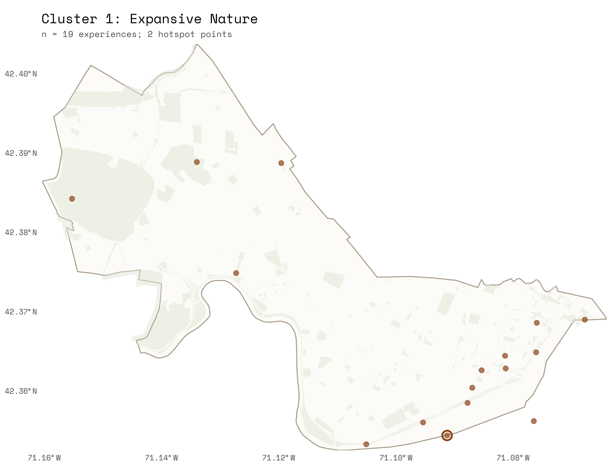
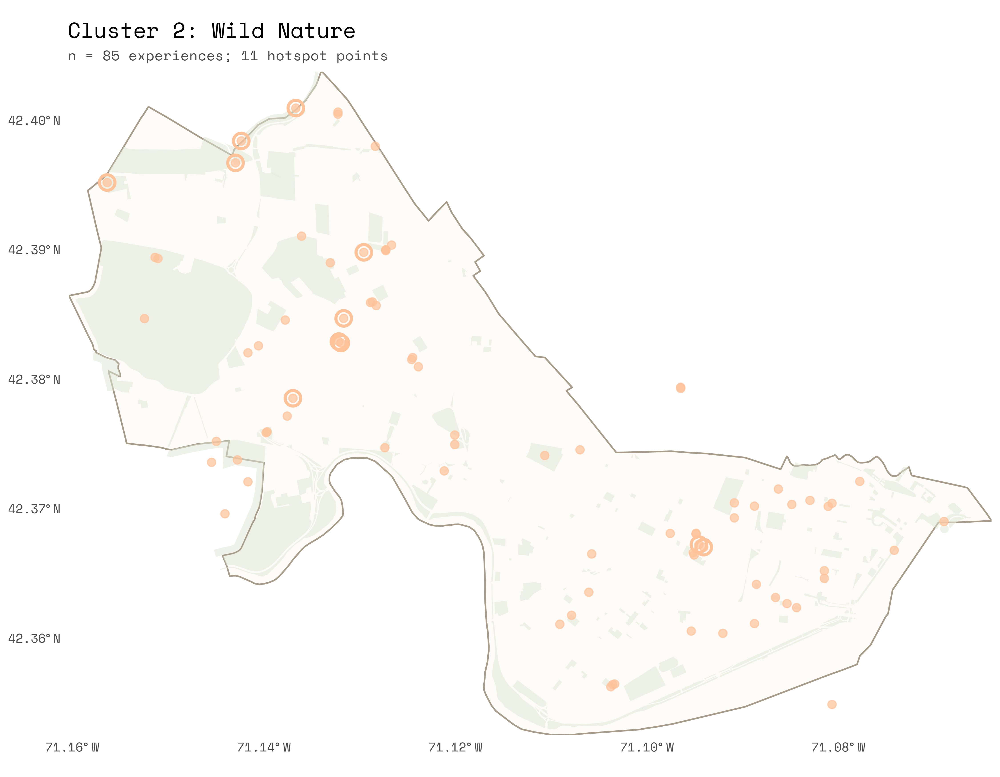
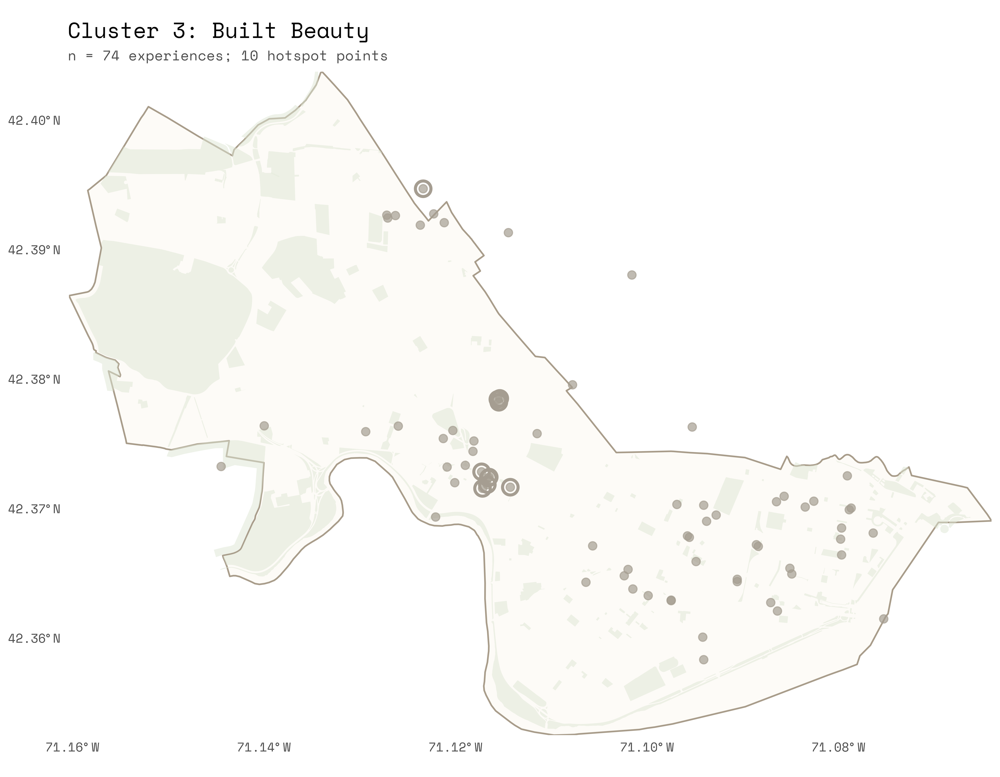
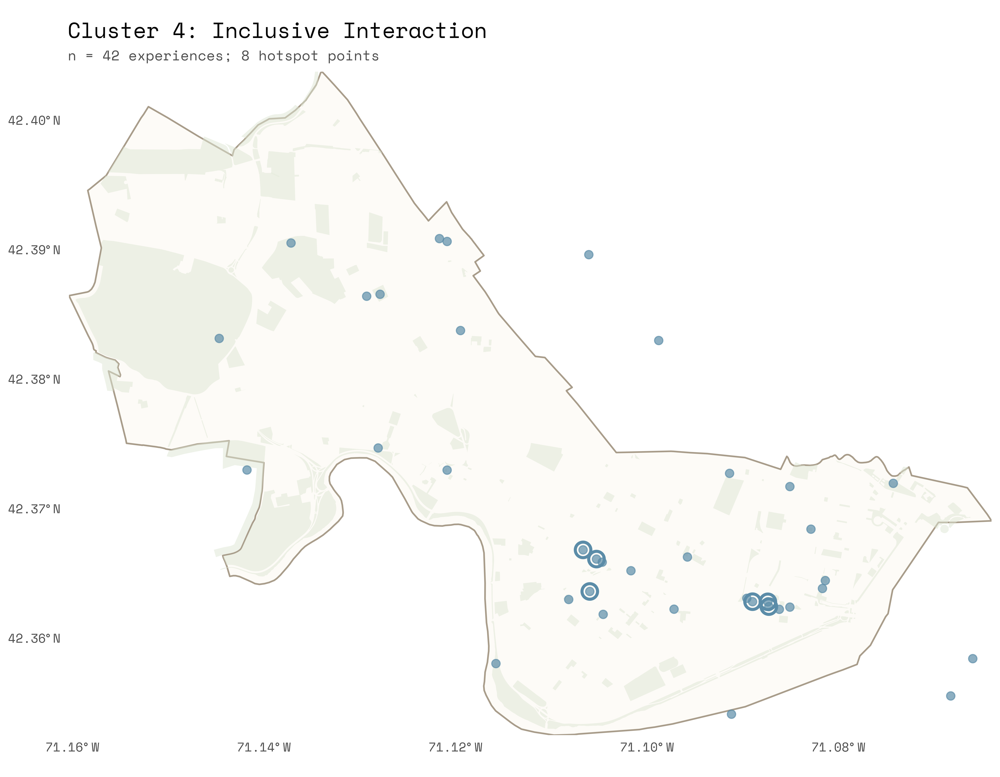

is the feeling of being in the presence of something vast that transcends your current understanding of the world.
Moments of awe are most common on streets and in parks, and most often take the form of plants, architecture, and art & objects.
Vast encounters with water, sky, and landscape — moments where the body's smallness becomes vivid against the city's openings and edges.
The most common archetype — encounters with living things that exceed human control, from seasonal blooms to animal presence, generating wonder and a sense of otherness.
Awe found in the ornate craft of the built environment — architecture, public art, and visual design that stops you in your tracks along the city's streets.
Moments of collective effervescence — gatherings, events, and communities that dissolve the boundary between self and crowd, generating a felt sense of belonging.
Most archetypes are spatially clustered within the city, gravitating toward hotspots shaped by where moments of awe were recorded.
Vast encounters with water, sky, and landscape — moments where the body's smallness becomes vivid against the city's openings and edges.

The most common archetype — encounters with living things that exceed human control, from seasonal blooms to animal presence, generating wonder and a sense of otherness.

Awe found in the ornate craft of the built environment — architecture, public art, and visual design that stops you in your tracks along the city's streets.

Moments of collective effervescence — gatherings, events, and communities that dissolve the boundary between self and crowd, generating a felt sense of belonging.

When you wander through Cambridge, what type of awe are you most likely to notice?
What catches your attention?
What invites a sense of mystery and wonder?
Cambridge is full of places that stop people in their tracks. This is a set of tools for finding them, mapping them, and understanding what it is about those places that moves us.